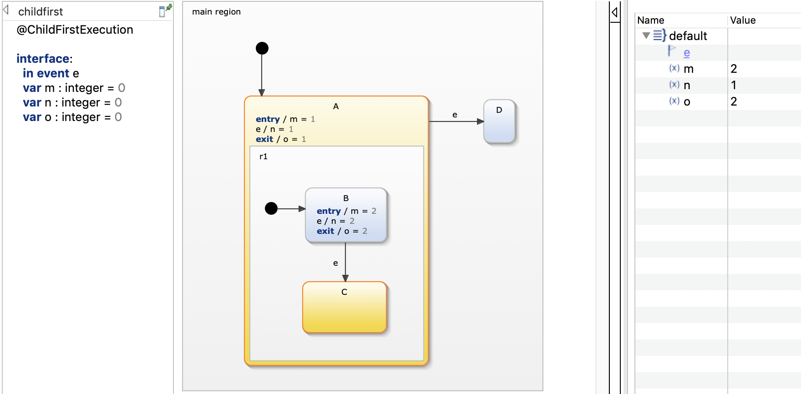

This example demonstrates the two different execution schemes of composite states: child-first and parent-first execution. For more information, please also refer to chapter Parent-first and child-first execution.
The parent-first and child-first execution schemes define in which order a composite state and its substates are processed:
The question that we want to answer is: What happens if event e is raised, i.e. which state gets activated, C or D; and what are the values of the statechart variables m, n and o afterwards?
Let's first answer which state gets active. When the event e is raised, the specified execution scheme defines which of the currently active states', A's or B's, outgoing transitions are evaluated first. In the child-first execution scheme, state B, the active child of the composite state, is processed first. Hence, the transition to state C is evaluated and taken. In contrast to that, in the parent-first execution scheme, the outer state A is processed first and state D gets activated:
Now let's take a look at the variable values. When starting the simulation (or when entering the statechart), the outer state A is activated first, independent of the used execution scheme. Afterwards, the entry action of state B sets m to 2. After event e is raised, the inner state B is exited first, before A is exited which sets the value of o to 1.
Notice the difference when child-first execution is used:

When event e is raised, state B is exited, setting variable o to 2. Furthermore, the outer state A stays active in this run-to-completion step and hence its local reaction is executed, setting n to 1.